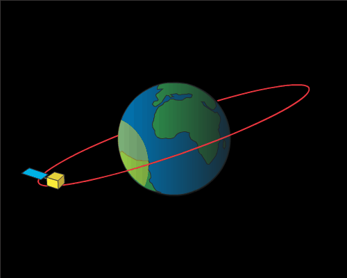

Общие сведения о дистанционном зондировании
Пространственный анализ урбанизированных территорий. Лекция 1
Что такое дистанционное зондирование?
Дистанционное зондирование - это получение данных об объекте без непосредственного контакта.
Например, фотографирование объекта или его лазерное сканирование.

Источник: https://www.paititi.info/ru/tehnologija-poiskov/distancionnoe-zondirovanie-iz-kosmosa/
Важное уведомление
Конкретно в этой теме и лекции будет говориться преимущественно про спутниковые снимки, но, конечно, этим дистанционное зондирование не ограничивается.
Энергия, которую Земля получает от Солнца, называется называется электромагнитным излучением.
Излучение отражается, поглощается и испускается атмосферой или поверхностью Земли.

Спутники (или другое устройство, например, беспилотное воздушное судно) несут приборы или датчики, которые измеряют электромагнитное излучение, отраженное или испускаемое от наземных и атмосферных источников.
На заметку
С помощью приборов ученые могут измерять высоту, температуру, влажность содержание (и многое другое) почти для каждой характеристики земной атмосферы, гидросферы, литосферы и биосферы.

Источник: https://gisgeography.com/remote-sensing-earth-observation-guide/

Источник: https://www.earthdata.nasa.gov/learn/earth-observation-data-basics/remote-sensing

Источник: https://spec.tass.ru/sfu-dzz/
На заметку
В настоящее время кроме государственных программ существует еще целый ряд коммерческих спутниковых группировок.

Источник: https://landsat.gsfc.nasa.gov/satellites/timeline/
Классификация по типу сенсора

Классификация по типу орбиты




Источник: https://dewesoft.com/blog/every-satellite-orbiting-earth-and-who-owns-them
Классификация по разрешению

Спектральное разрешение
Соответствует количеству диапазонов электромагнитного спектра и размеру зон съемки, регистрируемых съемочной аппаратурой.
Съемочная аппаратура и снимки, получаемые с ее помощью, делятся на:
монохроматические (однозональные, интегральные или панхроматические);
мультиспектральные (от 2 до 10 регистрируемых диапазонов);
гиперспектральные (может быть более 100 зон).


Источник: https://mining.earthdaily.com/knowledge-base/knowledge/introduction-to-remote-sensing

Источник: https://innoter.com/services/dannye-dzz/

Источник: https://www.earthdata.nasa.gov/learn/earth-observation-data-basics/remote-sensing

Источник: https://landsat.gsfc.nasa.gov/satellites/landsat-8/

Спутник AIRBUS Pleiades Neo. Продукт HD15. Пример космоснимка с пространственным разрешением 15 см
Радиометрическое разрешение
Радиометрическое разрешение снимков определяется шириной динамического диапазона используемого датчика (количеством уровней дискретизации, соответствующих переходу от яркости абсолютно черного к абсолютно белому цвету.
Радиометрическое разрешение указывается числом бит. РР 8 бит соответствует 256 уровням градации яркости.

Источник: https://www.usgs.gov/media/images/radiometric-resolution-example

Источник: https://www.earthdata.nasa.gov/learn/earth-observation-data-basics/remote-sensing
Классификация по уровням обработки


Использование материалов ДЗЗ

Разные материалы и объекты по-разному отражают и поглощают энергию, за счет чего возможно, например, определение материала по отраженной длине волны.

Источник: https://earth.jaxa.jp/en/eo-knowledge/remote-sensing/index.html


Шлейфы на данных MSI (Sentinel-2A, ESA), Метеор-M2-4 (КМСС 101/102, НИЦ Планета) и MODIS (AQUA) Источник: http://sci-vega.ru/mapviewer/?id=1770220387291
Спектральные индексы
Спектральные индексы основаны на том, что разные поверхности отражают и поглощают различные части электромагнитного спектра.
На заметку
Расчет спектральных индексов основан на локальной растровой алгебре1.
Локальные операции растровой алгебры — анализируется одна ячейка растра или совпадающие в пространстве ячейки нескольких растров


Источник: https://aeromotus.ru/obzor-vozmozhnostej-indeksa-ndvi/

Источник: https://www.usgs.gov/landsat-missions/landsat-normalized-difference-vegetation-index
Normalized Burn Ratio (NBR)3 - индекс для идентификации и поиска сгоревших территорий.
Normalized Difference Snow Index (NDSI) - нормализованная разница между зеленым каналом и коротковолновым инфракрасным.


Источник: https://t.me/gisgoo/262


Источник: https://www.freecodecamp.org/news/how-to-detect-objects-in-images-using-yolov8/
Классификация изображений в ДЗЗ
Все методы классификации здесь можно поделить на две большие группы:
пиксельные - классификация осуществляется на основе значений в индивидуальных пикселях
supervised (обучение с наблюдением)
unsupervised (обучение без наблюдения)
объектные - классификация осуществляется на основе заданных параметров конкретных объектов.

Источник: https://seos-project.eu/remotesensing/remotesensing-c06-p03.html
Важное уведомление
При использовании объектной классификации будут учитываться не отдельные пиксели, а объекты на основе тренировочного набора данных: их форма, размер, геометрические параметры, значения электромагнитного спектра.


Сегментация
При сегментации изображений на них выделяют конкретные пиксели, составляющие объекты.

Источник: https://neerc.ifmo.ru/wiki/index.php?title=Компьютерное_зрение

Источник: https://towardsdatascience.com/semantic-segmentation-of-remote-sensing-imagery-using-k-means-e4c165d9218e/

Источник: Trujillano, F., Jimenez, G., Manrique, E. et al. Using image segmentation models to analyse high-resolution earth observation data: new tools to monitor disease risks in changing environments. Int J Health Geogr 23, 13 (2024). https://doi.org/10.1186/s12942-024-00371-w
Сноски
Tomlin, Dana. 2012. GIS and Cartographic Modeling. 2nd Editio. ESRI Press
https://www.usgs.gov/landsat-missions/landsat-surface-reflectance-derived-spectral-indices